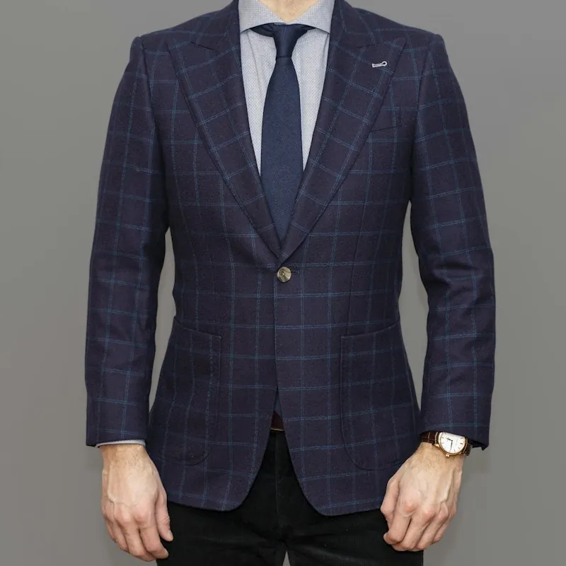
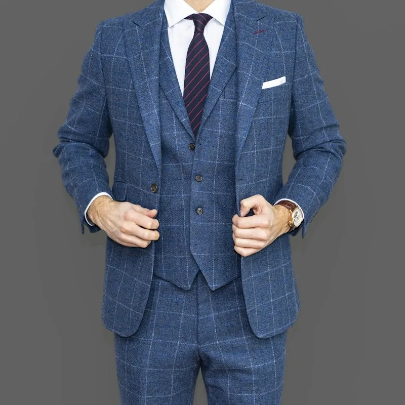
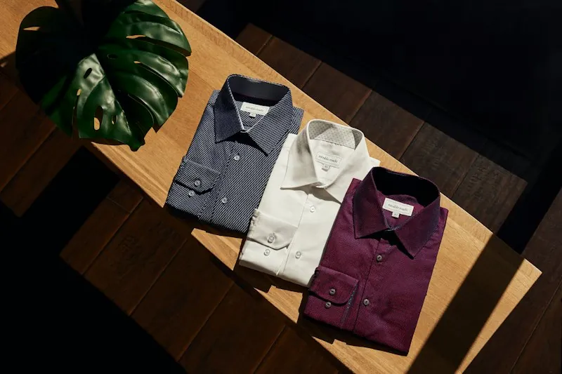
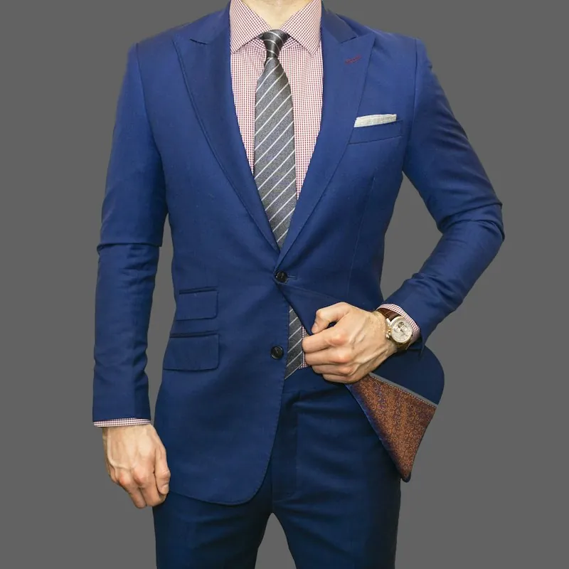
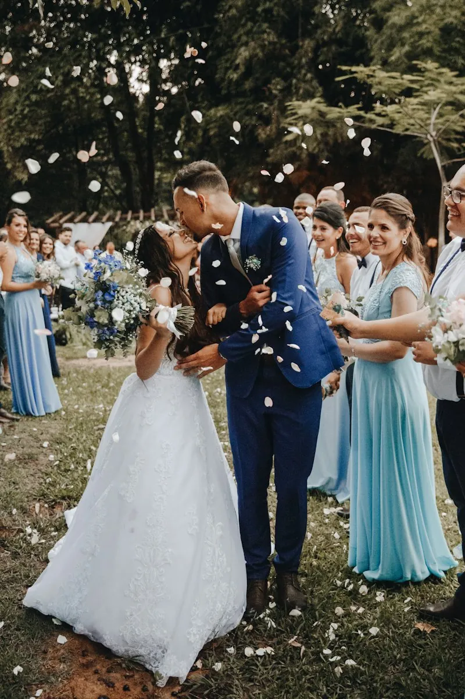
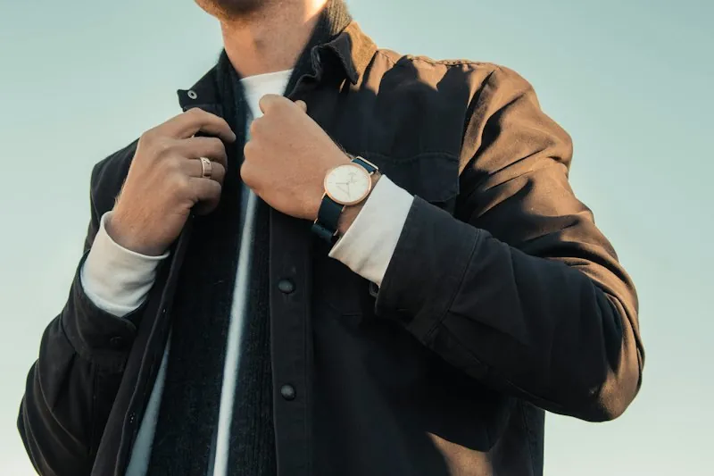
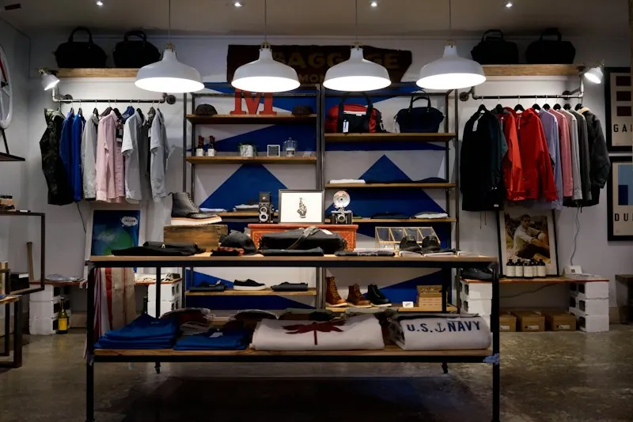
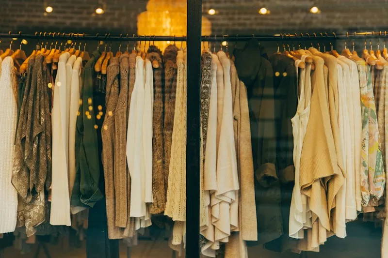
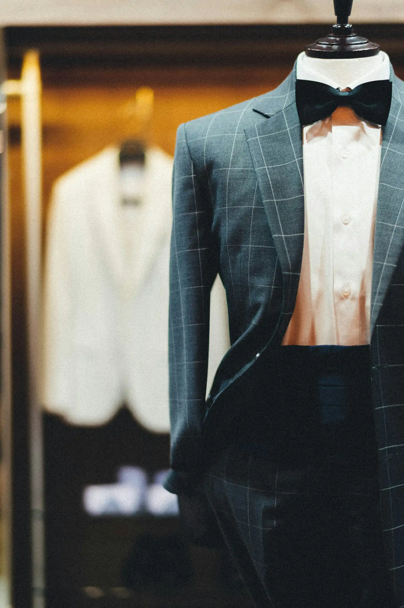

Fabric 01
Suiting
Woven cloths for two- and three-piece suits — checks, solids and pinstripes that hold a crease through a long day.
Men’s tailor · Bahadurabad, Karachi
Dress Master has dressed Bahadurabad’s men for decades — suits, shalwar kameez and sherwanis measured, cut and finished by hand, one customer at a time.

The tailoring journey
Nothing here is bought off a rack. Every garment at Dress Master travels the same road — measured on you, cut for you, stitched, fitted and finished before it leaves the shop.
It starts at the shop counter in Bahadurabad. Shoulders, chest, waist, sleeve and length — taken on you, in person, and written down for your next order too.
The cloth is laid out and cut to your measurements — not to a size chart. A suit cut for your shoulders sits differently, and it shows the moment you put it on.
Seams, collars, cuffs and buttonholes are stitched in the shop’s own work. The details you never notice — until a ready-made shirt reminds you they matter.
You try it on. The tailor marks what needs moving — a shoulder here, a hem there — and the garment goes back to the bench before it is ever called finished.
Pressed, checked and handed over — a garment that was your measurements from the first chalk mark. Bring it back for alterations whenever the fit changes.
The fabric library
Karachi’s heat, a winter wedding, an office week — the right cloth is half the suit. Come and feel the fabric before you decide; a photo can’t tell you how it drapes.

Fabric 01
Woven cloths for two- and three-piece suits — checks, solids and pinstripes that hold a crease through a long day.

Fabric 02
Breathable cottons for shalwar kameez and everyday shirts — the cloth Karachi’s summers were made for.
Fabric 03
Easy-care fabrics for daily shalwar kameez and office shirts — smart out of the wash, no fuss in between.
Fabric 04
The inside of the garment matters as much as the outside — linings, buttons and finishing chosen to match the cloth.
Bring your own cloth, or choose from the shop’s fabric — call ahead if you’re looking for something specific.
What we stitch
One tailor, every occasion a Karachi man dresses for. Prices on request — they depend on the cloth and the garment, so ask at the shop.

Business and formal suits cut to your shoulders — single or double breasted, with a waistcoat when the occasion calls for it.
The everyday essential, stitched to your measurements — straight collars, cuffed sleeves, and a fit that sits right all day.

Wedding and festive wear — sherwanis and waistcoats for the groom and the baraat, made to be photographed.
Dress shirts and trousers in your cloth of choice — collar shape, cuff style and fit decided with you, not for you.
The full groom’s outfit, from the first measurement to the final fitting before the big day — come early, weddings don’t wait.

Hems, tapers, taken-in waists and rescued favourites — bring the garment in and the tailor will tell you what can be done.
A suit that was measured on the man wearing it.
The fitting
Shoulders that slope, one arm a touch longer, a waist that isn’t a chart number — a made-to-measure suit is built around the body that will actually wear it. That is the whole point of a tailor, and it is why Bahadurabad’s men have come to this shop for decades instead of a mall rack.
Heritage
Bahadurabad has grown around this shop — the cloth markets, the wedding halls, the families who have dressed here for a generation and now bring their sons. Dress Master is one of the neighbourhood’s long-standing names: a men’s tailor that has kept doing one thing, the slow way, while the streets outside changed around it.
There is no shortcut in the work, and there never was. Measure, cut, stitch, fit, finish — the same five steps for a school-leaver’s first suit as for a groom’s sherwani.
— Dress Master, Bahadurabad


Why made-to-measure
01
Small, medium and large are somebody else’s idea of you. A tailor’s tape measure is yours.
02
Hold the fabric, see it in daylight, then decide. No surprises when the parcel arrives — because there is no parcel.
03
If the fit needs a tweak, the tailor who made it is across the counter — not a helpline in another city.
04
Office suits, Eid shalwar kameez, wedding sherwanis — the same measurements, the same hands, for all of it.
Finished looks
Suits, shirts and occasion wear in the styles Dress Master stitches. Tap any photo to see it larger.

Occasions
Occasion 01
Groom’s sherwani or suit, and matching waistcoats for the family — ordered in good time, fitted before the day.
Occasion 02
Suits and shirts that hold their shape from the first meeting to the last — cut for sitting, standing and long days.
Occasion 03
Fresh shalwar kameez and waistcoats for Eid and family occasions — the order the whole street notices.
Visit the shop
Address
Bahadurabad, Karachi, Sindh
Phone
021 34945441
Facebook
facebook.com/dressmaster
Hours
Call the shop for today’s hours before you visit.
Book a fitting
This form doesn’t send anything anywhere — it puts your enquiry together so you can read it out when you call the shop on 021 34945441. No account, no waiting for a reply that never comes.
Questions
No — walk in during shop hours. If you’re coming for a wedding order, call first on 021 34945441 so the tailor can set aside proper time.
Yes, most tailors stitch customer cloth — bring it in and the tailor will check the length is enough for your garment before cutting. Call the shop first if you’re unsure how much to buy.
It depends on the garment, the cloth and how busy the shop is — a wedding sherwani takes longer than a shirt. Ask for a date when you order, and order early for weddings and Eid.
Bring the garment in and the tailor will tell you what can be done — hems, tapers and taken-in waists are everyday work. Some jobs aren’t worth doing, and he’ll say so.
Prices depend on the cloth and the garment, so they’re given at the shop, not online. Prices on request — call 021 34945441 or visit with your fabric in mind.
Bahadurabad, Karachi — call the shop or walk in.